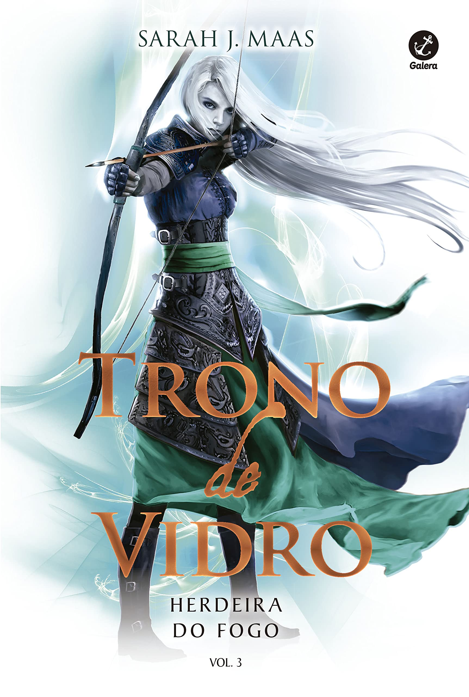
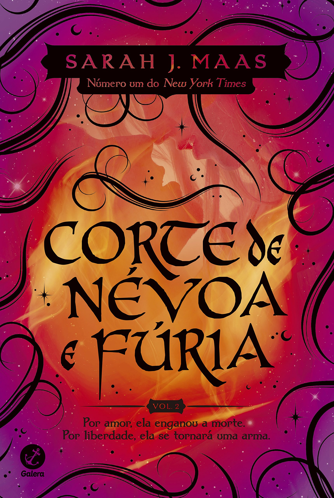

A magia há muito abandonou Adarlan. Um perverso
rei governa de seu trono
de vidro, punindo impiedo-
samente as minorias rebeldes, quando uma assassina
chega ao castelo.
Depois de cometer um erro e ser capturada, ela se tor-
na
prisioneira nas minas de sal de Endovier, onde a
tortura prevalece e ninguém sobrevive.
Feyre Archeron morreu Sob a Montanha. Nas garras de Amarantha,
a jovem humana que ansiava por amor e proteção deixou de existir.
Das cinzas de seu velho eu, Feyre Quebredora da Maldição foi Feita
com os poderes de sete Grão-Feéricos... e uma vontade tão férrea
quanto o metal temido por eles.